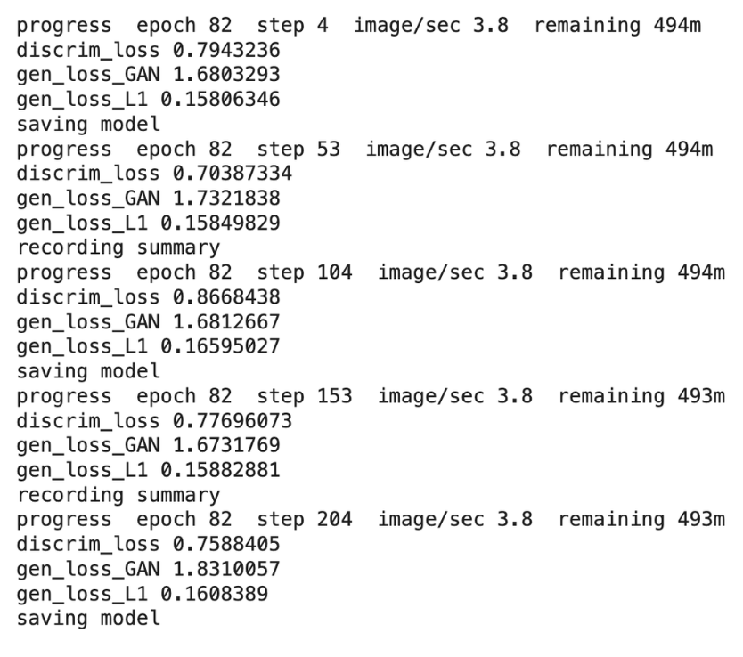
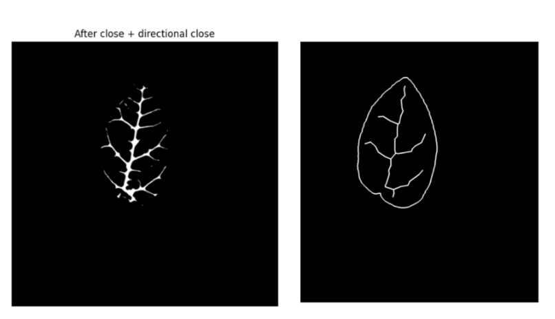
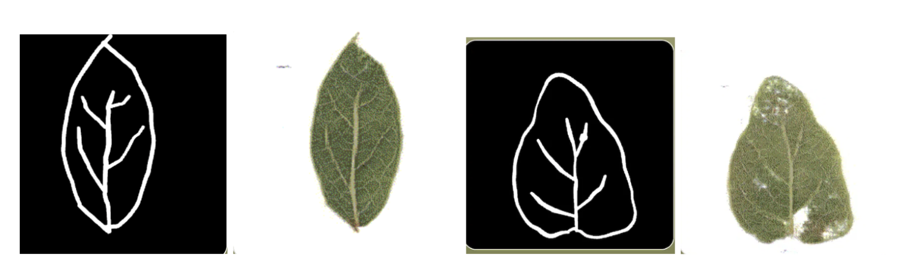
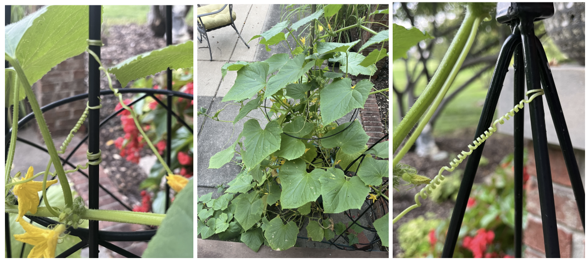
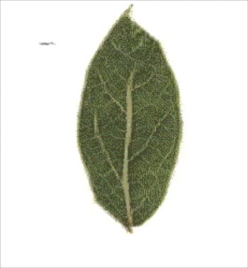

Carey J. Flack
Leaves in hand, I came into this project with a simple question: what does it take to teach a machine to see what we overlook? And what can teaching a machine, in turn, teach me about life around us?
I'm a hobby ecologist and run an Instagram blog called @pressed.roots, where I study the black history of plants and landscapes. Because of my work, I'm naturally drawn to the power of the small. For this project, I chose to investigate the vein networks in a leaf — vital to life on earth, and an almost entirely unseen and unappreciated ecology. My subject: the creeping fig (Ficus pumila), is a little vine that eats fences in my neighborhood in Oakland, California. It's invasive here, so harvesting hundreds of its leaves felt like an easier and more ethical choice than harvesting a native plant — well, that is at first.
Choosing my Data. I knew that choosing my dataset was the most important part of my project — good gatherable data creates good results. So I kept it simple: 300 leaves, one shrub type. I did have other choices though: pulling from public archives, or already existing personal images; but I chose hand harvesting to explore the real labor models require, and to honor the click workers and many hands that shape AI today. So I laid the leaves on the scanner glass a handful at a time, and scanned every single leave before pressing them in a book. 20+ hours later, across many days, I came to appreciate what it actually takes to gather and train ML data — turns out it looks a lot like foraging.

Foraging Data by Hand. As a fruit forager, the questions I face in my own everyday harvesting practice started bubbling up during data collection too, even though I wasn't foraging fruit — I was data foraging. The process quickly became meditative and extremely reflective, I wondered:
- What data do we ignore in our everyday lives?
- What should and shouldn't we harvest?
- What relationship do I have with the data that I'm collecting?
- What does abundance permit?
- What am I extracting, and what am I exchanging for it?
The silent logic here, that I would never say outloud, was that abundance granted permission. It’s invasive and everywhere right? It’s in a public space? This is the same logic used to scrape the web for large language learning models. That idea started to trouble me. I started seeing how the extraction of our data and our environment are so intimately connected.
Robin Wall Kimmerer's writing on the Honorable Harvest became a source of internal resolve: the idea that taking from a living thing comes with obligations — ask first, take only what you need, use everything you take, give something back. My own family has fished, farmed, and foraged for generations, and there's a specific kind of obligation that shows up the moment you gather something yourself, by hand, instead of having it arrive already packaged for you. You can't help but notice what you're taking. Which means you can't help but ask what you owe it.
In this case, I realized the environment would lose a little ecological data and hopefully, from my efforts, gain another kind. Maybe a new kind of knowledge.

Preparing the Data, Training the Model. Gathering and scanning is only half of it. I cropped each leaf, then augmented all 300 leaves into 1,200 by first flipping them horizontally and then vertically. I then set up the training pipeline, and hit go. Then came the waiting. The logs ticked past for hours — discriminator loss, generator loss, three numbers in a tug-of-war — while checkpoint by checkpoint, a blurry leaf slowly started taking form.
It kind of looked like shit. Smeary, dithered, a little haunted-looking — why is AI so uncanny?! But look closer: it learned green in the middle, pale at the vein, darker at the edge. A model that didn’t even exist hours ago now had a few opinions.

Can a Machine Learn a Vein, Then Dream a New One? That was the real question in this first go. Veins are unseen — we don't think about them — but they hold up the whole leaf, and the leaf holds up the ecosystem, and the air we breathe. Watching it train, checkpoint by checkpoint, I understood ML differently. The output we obsess over isn't the point. The inputs are — the data, the pipeline, the thousands of small decisions, made by hand, by someone. What artists have been saying all along has turned out to be true: the purpose is the process, and the labor is the art. I did undertrain it a bit, in the end. You live, you learn, and you train again. What’s another Epoch anyway?
I came back to this project with the same guiding question but new learnings in hand, ready to train this model all over again from scratch.
What Changed This Time: This time, my input dataset had veins, which required tremendous troubleshooting, because the computer vision I was using couldn’t easily articulate the idea of tracing 3-4 major veins on a leaf that had dozens of branching veins. This is something you can easily ask any person to do when you say “draw me a leaf”, you’ll get a basic outline and a few veins, but a model? That wasn't so simple. It wanted to draw everything.

So eventually the dataset got veins, and the sketch tool got a rebuild with new brushes specifically for the outline of the leaf and the veins (I had to make sure the drawing tool replicated the input data as closely as possible to produce the best output), and lastly the model trained much longer with far more epochs. And it worked — it learned enough of what a vein is to generate ones it had never seen, off a hand-drawn suggestion anyone could make, artist or not.

Sketches of Life. But success brought more questions than answers, which I probably should have expected by now. This model is, at best, replicating the part of a leaf's vein network that humans can see. I can't see inside the vein network myself. I can't account for all of the ecological inputs, or follow the root systems entangling this leaf with the rest of its ecosystem. Maybe before we ask a machine to imagine something new and daring, we first have to sit with the limitations and biases of what we see.
Connected Intelligences: Human, Machine, Nature. That's where I landed on an idea I keep circling back to — connected intelligences. Where I'm limited, I can lean on another kind of intelligence as an inspiration point, the same way humans have practiced biomimicry for eons.
- Machine intelligence: its ability to synthesize what we know across many and connect it faster than we could.
- Human intelligence: our ability to feel, reflect, hold intuition, and pursue a higher purpose.
- Ecological intelligence: the constant stretching toward life, always finding balance and connection.
I wonder what's possible when we pause for a second and consider nature's intelligence as part of our investigations? What can we create? What could we learn?
I'm excited to continue thinking about how humans, machines, and nature can be in deeper conversation as we, together, shape the future. Not as superiors with conflicts of interest, but as equal partners.
The Power of the Small. My mom, whose garden I've been spending a lot of time in lately, told me to watch what a plant does: how it responds when it's watered, how a vine's tendrils go looking for a fence or a pole to wrap around. That's how you know it's alive, she told me, by the way it reaches. A lot is packed into the small — a single human, or a single leaf, on a very large earth, still carries power and potential.

I grew up in a pretty spiritual home, but this project is a reminder that life is so beautiful, ephemeral, and maybe a little more mysterious than I even recognize at times. My partner reminds me that machine learning, at its most honest, brings us back to mystery rather than trying to resolve it. I agree.

These leaves, for me, are a small meditation on the miracle of humanity. By looking at a leaf's generated vein in a meditative way, I look at a building block of life, and think of my own.
If these leaves being successfully generated feels like a little miracle of my own harvesting and effort, then so is all life, really. We are made up of this effort, knowledge, and connectivity.
Natural Stopping Points, and the Art of the Epoch. I guess a handful of epochs are a lot like life: you look closely at the same thing, over and over, wondering what to take from it, until the reasoning finally comes into view. I'm ending up in the same position as my own model: the work isn't done, but natural stopping points are sometimes more of an art than a hard science. I'm liking this stopping point. It's a reminder that the road I'm on is a continuous journey of learning and becoming — just me, the machine, and nature.